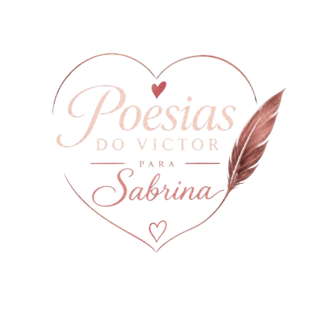

Eu amo o nosso tempo
Juntos e de qualidade
Não o deixaria passar,
Mas deixo para contigo aproveitar.
Porém, que seja lento,
Dure como uma eternidade.
Eu voltaria no tempo
Para reviver nossas experiências.
Viveria cada ciclo infinito
Milhões de vezes.
Me assusta o voar do tempo,
O quão rápido ele passa quando estamos juntos.
Mas, ao seu lado,
Os segundos passados não são,
Em direção à morte, passos dados.
Na realidade, são
Memórias colecionadas.
O tempo não para,
Desacelera quando te vejo.
Me encanto com a sua beleza.
Valorizo você, meu tesouro eterno.
Passam as estações,
Do verão ao inverno,
E sua beleza brilha.
Não para,
Magnífica, como se esculpida
Por deuses.
Mas não uma escultura de bronze:
A passagem do tempo não te oxida.